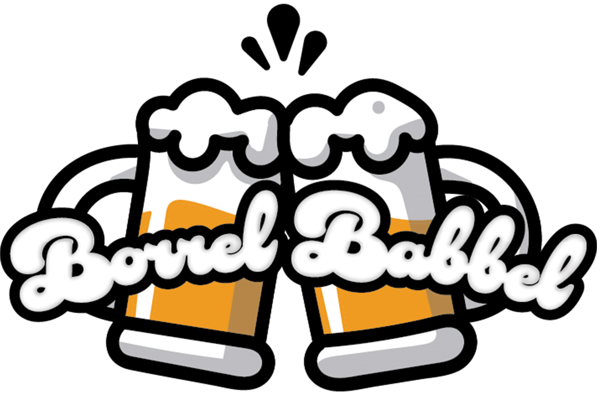

Schuif aan
Schenk in
Babbel mee!
Borrel Babbel:
Welkom bij Borrelbabbel! De podcast waar het altijd gezellig is en waar we de leukste verhalen en gesprekken delen. Of je nou wilt lachen om drankverhalen, iets nieuws wilt leren of gewoon een beetje afleiding zoekt, bij ons ben je aan het juiste adres. Dus schuif aan, schenk in en babbel gezellig met ons mee!
Populairst

Aflevering 5 Proost en Paspoort!
Gaan we dit jaar weer op vakantie? Waar nu naartoe, Cherso, Mallorca, Lloret of Split? Wat zijn onze gekste verhalen die wij beleefd hebben terwijl we in het buitenland waren, met vrienden of met familie. En wat is voor ons de leukste of goedkoopste locatie voor een geslaagde jongerenvakantie? Lees meer...
28 november | 37 minuten
Nieuwste
Aflevering 6 Nederlandse Kroegenkaart!
Ik feest toch wel het liefst in mijn eigen kleine dorpje, maar op z'n tijd is de grote stad wel leuk. Alleen naar welke stad zouden we dan moeten gaan?! Waar kan je het leukst kan uitgaan? Thuis, in je eigen stad/dorp, randstad of toch het boeren oosten opzoeken? In deze aflevering gaan wij dat voor je uitzoeken! Lees meer...
5 december | 35 minuten
Wat is de Borrel Babbel?
Interactief
Luisteraars spelen een actieve rol door hun verhalen, vragen en dilemma's in te sturen. Deze worden besproken in onze podcast, waardoor elke aflevering persoonlijk is. Wij stemmen de inhoud af op wat de luisteraars écht willen horen.
Vriendelijk
De sfeer is gezellig en informeel, net zoals een avondje borrelen met goede vrienden. Iedereen voelt zich welkom en herkent zichzelf in de gesprekken. Het is de perfecte mix van ontspanning, humor en verbinding.
Authenktiek
Geen scripts, geen verfraaiing, alles wordt besproken zoals het is. Jullie gaan de diepte in, maar schuwen ongemakkelijke of rauwe momenten niet. Authenticiteit staat centraal, met een flinke dosis eerlijkheid en spontaniteit.
Populairste afleveringen:
Aflevering 5 Proost en Paspoort!
Gaan we dit jaar weer op vakantie? Waar nu naartoe, Cherso, Mallorca, Lloret of Split? Wat zijn onze gekste verhalen die wij beleefd hebben terwijl we in het buitenland waren, met vrienden of met familie. En wat is voor ons de leukste of goedkoopste locatie voor een geslaagde jongerenvakantie? Lees meer...
- 28 november | 37 minuten
- luister nu

Aflevering 2 Blackout!
Het is 3 uur s' nachts en ik probeer op te staan, maar wordt in eens heel licht in mijn hoofd, zwak in mijn benen en voor ik het wist werd ik wakker op de bank in de woonkamer. Wat is er gebeurd? Geen idee. Een black-out hebben is nooit leuk. Hoe voorkom je ze en hoe ga je ermee om? Lees meer...
- 7 november | 32 minuten
- luister nu
Aflevering 4 Groepsdruk
Zullen we deze Zaterdag weer uit gaan? hmmm.... ja is goed, maar Ik doe deze keer even wat rustiger aan. "Joh doe niet zo zwak". Wij gaan uitzoeken hoe je het best om kan gaan met groepsdruk en hoe je ervoor zorgt dat je niet over je grenzen gaat terwijl je dat niet wilt? Lees meer...
- 21 november | 32 minuten
- luister nu